6. 结果可视化
print.unihtee() / plot.unihtee() 逐项，以及从 temvip_inference_tbl 自己画的六类图
unihtee 的可视化只有一个函数、一个必填参数，能画的也只有一条直线。 所以这一页分两半：前半把内置的 print.unihtee() 与 plot.unihtee() 讲透， 包括它画出来的那条线能说明什么、不能说明什么； 后半给出从 temvip_inference_tbl 自己画的六类图—— 森林图、火山图、排序条形图、交叉拟合对照、效应尺度对照、生存森林图， 每一张都附可直接运行的代码和本机实际输出。
0.0.3 的 NEWS 只写了三条，其中两条就是这一页的内容： “Adding plotting functionality” 与 “unihtee() now outputs a unihtee class object with associated plotting and printing methods”。0.0.2 及更早返回的是普通 list，没有类。
print.unihtee()
print(x, ...)函数体一行：
print(x$temvip_inference_tbl, ...)所以 print(fit) 与 fit$temvip_inference_tbl 完全一样， ... 原样转发给 data.table 的 print（nrows =、topn = 都可用）。
fit <- unihtee(dt, cn, cn, "a", "y",
outcome_type = "continuous", effect = "absolute")
fit modifier estimate se z p_value ci_lower
1: w_3 1.044592804 0.1599527 6.53063474 6.549161e-11 0.73108547
2: w_4 -0.869002514 0.1505155 -5.77351005 7.763697e-09 -1.16401281
3: w_8 0.137803254 0.1138565 1.21032372 2.261547e-01 -0.08535554
4: w_1 0.115258422 0.1168820 0.98610900 3.240796e-01 -0.11383036
5: w_9 0.124150185 0.1295567 0.95826884 3.379272e-01 -0.12978102
6: w_10 -0.097928234 0.1356345 -0.72200119 4.702937e-01 -0.36377176
7: w_6 0.054845105 0.1157812 0.47369617 6.357166e-01 -0.17208602
8: w_2 -0.064478504 0.1761998 -0.36593963 7.144101e-01 -0.40983019
9: w_7 -0.014704981 0.1485610 -0.09898279 9.211519e-01 -0.30588450
10: w_5 0.001500152 0.1100365 0.01363321 9.891226e-01 -0.21417147
ci_upper p_value_fdr
1: 1.3581001 6.549161e-10
2: -0.5739922 3.881849e-08
3: 0.3609620 6.758544e-01
...读这张表的三条规矩
- 不要横向比
estimate的绝对大小。 \(\hat\Psi_j\) 的量纲是 「结局单位 / \(W_j\) 单位」。上表里所有 \(W_j\) 恰好都是标准正态，可以比； 真实数据上不行。排序用z或p_value（表本身就按p_value排）。 p_value_fdr只在这一次调用的modifiers内部做 BH。 分批调用拼不出全局 FDR。modifier是factor。 按名字取行先转字符：
as.data.table(fit$temvip_inference_tbl)[as.character(modifier) == "w_3"]常用后处理
tb <- as.data.table(fit$temvip_inference_tbl)
tb[, modifier := as.character(modifier)]
tb[p_value_fdr < 0.05, modifier] # 按 FDR 阈值挑
tb[ci_lower * ci_upper > 0] # 区间不跨 0
head(tb$modifier, 5) # top-k，用于多方法取交集unihtee 没有 summary()、coef()、predict()——print 和 plot 就是全部方法。
plot.unihtee()
plot(x, y, ..., modifier_name, print_interpretation = TRUE)| 参数 | 说明 |
|---|---|
x |
unihtee() 的返回对象 |
y、... |
文档明确写着 “Ignored” |
modifier_name |
必填，单个变量名；没有默认值 |
print_interpretation |
TRUE 时在控制台 cat() 一句解读 |
返回 ggplot 对象，可继续叠图层。
它画的是什么
源码只有两行实质内容：
plotting_tbl <- data.frame(
x = modifier_vals,
y = ace_estimate + temvip_est * (modifier_vals - mean(modifier_vals)),
ace_estimate = ace_estimate)即把 TEM-VIP 当斜率、ace_estimate 当在 \(\bar W_j\) 处的截距，画出
\[ \widehat{\mathrm{CATE}}(W_j) \;\approx\; \widehat{\mathrm{ACE}} + \hat\Psi_j\,(W_j - \bar W_j). \]
横轴取自 fit$data，也就是缩放前的原始数据，所以横轴单位可以直接读。
连续变量
plot(fit, modifier_name = "w_3")
#> The TEM-VIP estimate corresponds to the slope of the black line.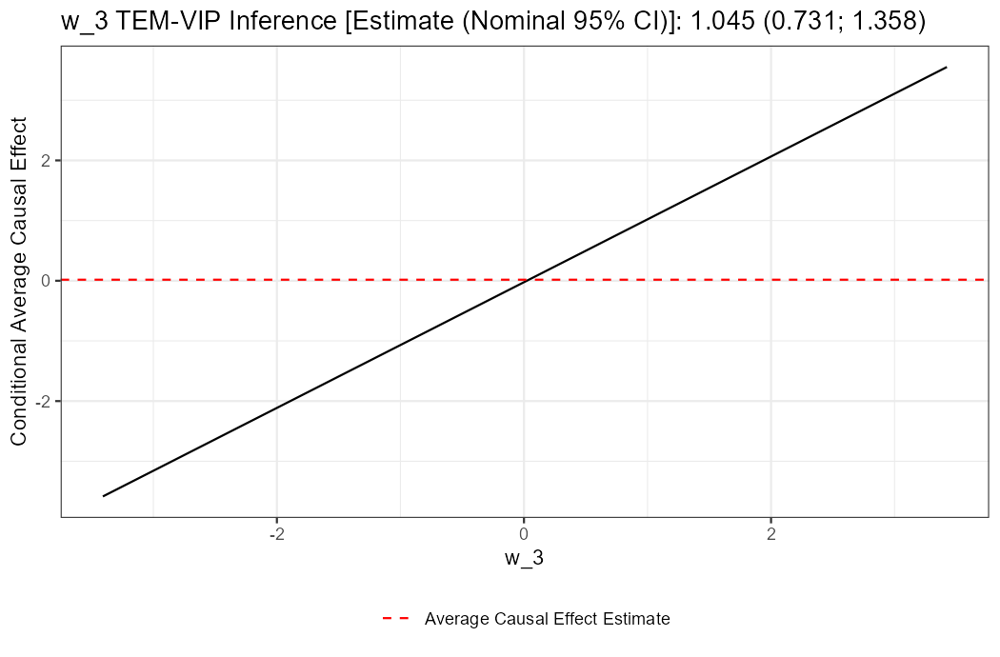
ace_estimate = 0.0174，两线在 \(\bar w_3\) 处相交。 标题给的是估计值与名义 95% 区间。
二值变量
源码用 identical(sort(unique(modifier_vals)), c(0, 1)) 判断， 命中时换成两个点 + 参考线：
dtb[, w_b := as.numeric(w_3 > 0)]
fb <- unihtee(dtb, c(cn, "w_b"), c(cn, "w_b"), "a", "y",
outcome_type = "continuous", effect = "absolute")
plot(fb, modifier_name = "w_b")
#> The TEM-VIP estimate corresponds to the vertical distance between both points.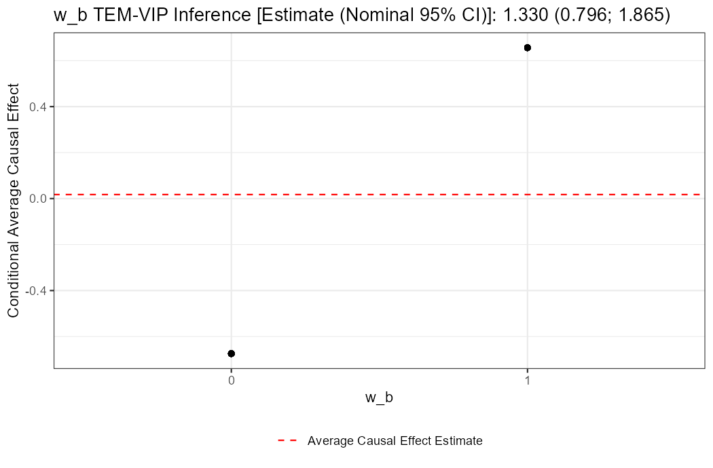
w_3 > 0 二值化之后 \(\hat\Psi = 1.330\)（连续版是 1.054）， 因为二值化改变了分母 \(\operatorname{Var}(W_j)\)，两个数不可直接比。
identical(sort(unique(modifier_vals)), c(0, 1)) 要求取值集合恰好是 \(\{0,1\}\) 且是 double。所以 0L/1L（整数）、只出现一个取值、 或编码成 \(\{1,2\}\) 都会走连续分支画成直线——不报错，只是图的形式不对。 需要二值样式就确保列是 as.numeric(x) 且两个取值都出现。
批量画：统一纵轴才看得出差别
plot.unihtee() 一次只画一个变量，纵轴按该变量自适应。 直接排版会得到六张”看起来都很斜”的图——因为噪声变量的纵轴范围只有 ±0.3。 把纵轴统一之后，信号与噪声才分得开：
library(patchwork)
tb <- as.data.table(fit$temvip_inference_tbl)[, modifier := as.character(modifier)]
top6 <- head(tb$modifier, 6)
# 先算出六张图共同的纵轴范围
rng <- range(sapply(top6, function(m) {
e <- tb[modifier == m, estimate]; x <- fit$data[[m]]
range(fit$ace_estimate + e * (x - mean(x)))
}))
ps <- lapply(top6, function(m)
plot(fit, modifier_name = m, print_interpretation = FALSE) +
coord_cartesian(ylim = rng) +
theme_bw(base_size = 11) + theme(legend.position = "none") +
ggtitle(sprintf("%s: %.3f (%.3f, %.3f)", m, tb[modifier == m, estimate],
tb[modifier == m, ci_lower], tb[modifier == m, ci_upper])) +
labs(x = m, y = NULL))
wrap_plots(ps, ncol = 3)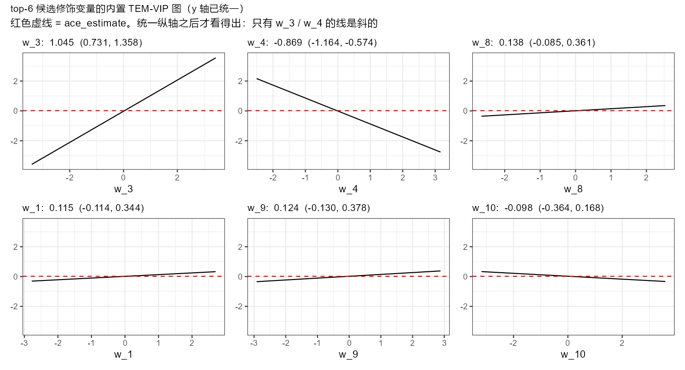
w_3 / w_4 的线是明显倾斜的， 其余四条几乎贴着 ace_estimate 那条红虚线。 不统一纵轴时六张图看上去都一样斜——这是批量出图最常见的误读来源。 print_interpretation = FALSE 必须加，否则控制台被那句解读刷屏； 它是 cat() 出来的，suppressMessages() 拦不住。
这条线不是拟合出来的，是画出来的
图上没有一个点来自数据的 CATE 估计——横轴是 \(W_j\) 的真实取值， 纵轴完全由 \((\widehat{\mathrm{ACE}}, \hat\Psi_j)\) 两个数决定。 无论真实的 \(\tau(W_j)\) 是什么形状，它都会画成一条直线。
要看真实形状，得把 AIPW 伪结局画出来。它可以从包的内部函数直接取到， 不需要另装 grf：
d2 <- copy(dt); mn <- min(d2$y); rf <- max(d2$y) - mn
d2$y <- (d2$y - mn) / rf # 复现内部的 min–max 缩放
g <- unihtee:::fit_prop_score(d2, NULL, Lrnr_glm_fast$new(), "a", cn)$estimates
q <- unihtee:::fit_cond_outcome(d2, NULL, Lrnr_glm_fast$new(), "y", "a", cn)
aipw <- ((2 * d2$a - 1) / (d2$a * g + (1 - d2$a) * (1 - g)) * (d2$y - q$estimates) +
q$exp_estimates - q$noexp_estimates) * rf # 乘回原始结局单位
ggplot(data.frame(x = dt$w_5, aipw = aipw), aes(x)) +
geom_point(aes(y = aipw), colour = "grey70", size = .6, alpha = .5) +
geom_smooth(aes(y = aipw), method = "loess", formula = y ~ x, span = .9, se = FALSE) +
geom_abline(intercept = fit$ace_estimate - tb[modifier == "w_5", estimate] * mean(dt$w_5),
slope = tb[modifier == "w_5", estimate], linewidth = 1)在一份 \(\tau(W) = w_3 + (w_5^2 - 1)\)、\(n = 800\) 的数据上跑：
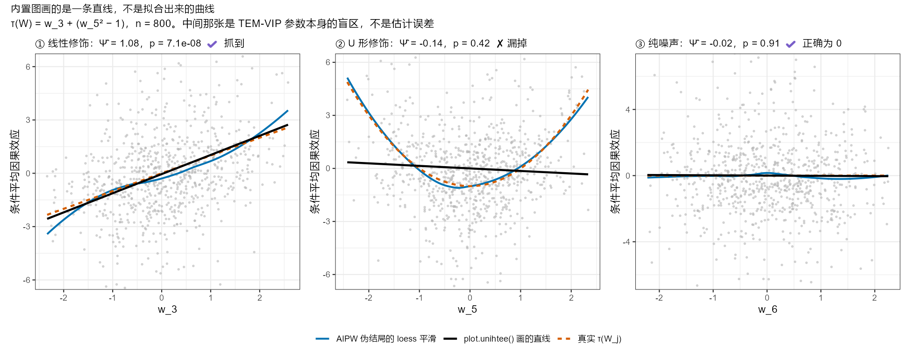
unihtee 的直线是平的， \(\hat\Psi = -0.14\)、\(p = 0.42\)——漏报。 ③纯噪声：正确地给出 0。 中间那张不是估计误差，是 TEM-VIP 参数本身的盲区： \(\Psi_5 = \operatorname{Cov}(W_5^2, W_5)/\operatorname{Var}(W_5) = \mathbb{E}[W_5^3] = 0\)， 对称的非单调修饰在这个参数下真值就是 0，加样本量、换学习器、开交叉拟合都救不回来。
这张对照图应该作为常规诊断跑一遍，尤其是当某个你有先验理由怀疑的变量 在结果表里排得很靠后时。发现是 U 形，就该换用能抓非线性的方法 （grf、MOB 树、或者先对该变量做样条/分箱再跑一次 unihtee）。
两个会报错的调用
plot(fit)
#> Error: argument "modifier_name" is missing, with no default
plot(fit, modifier_name = "not_a_var")
#> Warning in mean.default(modifier_vals) :
#> argument is not numeric or logical: returning NA
#> Error: arguments imply differing number of rows: 0, 1名字打错时的报错完全看不出病因（differing number of rows: 0, 1 来自 data.frame() 收到长度 0 的 x）。批量出图前先过滤名字：
for (m in head(as.character(fit$temvip_inference_tbl$modifier), 5)) {
p <- plot(fit, modifier_name = m, print_interpretation = FALSE)
ggsave(sprintf("temvip-%s.png", m), p, width = 7, height = 4.6, dpi = 150)
}叠图层
返回的是普通 ggplot，照常改：
plot(fit, modifier_name = "w_3", print_interpretation = FALSE) +
labs(subtitle = "n = 500，TMLE，默认学习器",
x = "w_3（标准化）", y = "条件平均因果效应") +
theme_minimal(base_size = 13)标题里那串 "... TEM-VIP Inference [Estimate (Nominal 95% CI)]: 1.045 (0.731; 1.358)" 是 ggtitle() 加的，labs(title = ) 会整个覆盖掉。想保留就改 subtitle。
自己画：三类结果表图
内置图一次只讲一个变量。筛选阶段真正要看的是整张表， 而这需要自己画。下面三类图覆盖了绝大多数场景，代码可直接抄。
共同的准备：
library(ggplot2); library(data.table)
tb <- as.data.table(fit$temvip_inference_tbl)[, modifier := as.character(modifier)]
tb[, sig := fifelse(p_value_fdr < 0.05, "FDR < 0.05", "不显著")]本页所有图用 ragg::agg_png 输出（ggsave(..., device = ragg::agg_png)）。 Windows 默认 PNG 设备在 CJK 上容易掉字，ragg 不会。 ragg 是 ggplot2 的常见配套，多数环境已经装了。
森林图：变量少（≤ 20）时的首选
森林图同时给出效应大小、精度和显著性，是结果表最忠实的翻译。
tb[, modifier := factor(modifier, levels = tb[order(estimate), modifier])]
ggplot(tb, aes(x = estimate, y = modifier, colour = sig)) +
geom_vline(xintercept = 0, linetype = "22", colour = "grey40") +
geom_errorbar(aes(xmin = ci_lower, xmax = ci_upper), width = .22, linewidth = .6) +
geom_point(size = 2.4) +
geom_text(aes(x = ci_upper, label = sprintf(" p=%.1e", p_value_fdr)),
hjust = 0, size = 3, colour = "grey30") +
scale_colour_manual(values = c("FDR < 0.05" = "#C0392B", "不显著" = "grey55")) +
scale_x_continuous(expand = expansion(mult = c(.05, .35))) +
labs(x = "Ψ̂ⱼ（结局单位 / W_j 单位）", y = NULL, colour = NULL) +
theme_bw(base_size = 11) + theme(legend.position = "bottom")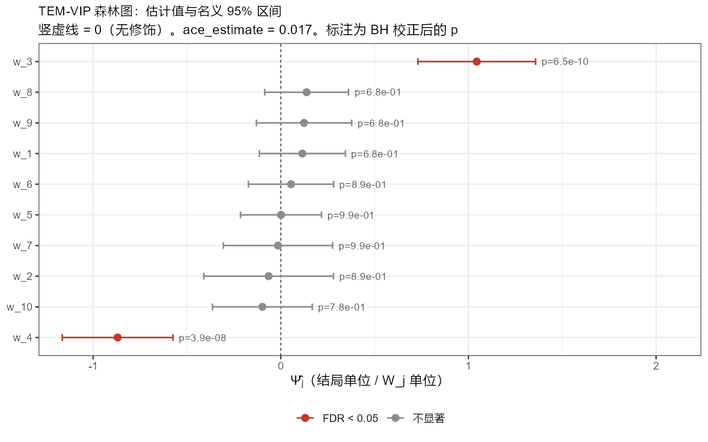
estimate 排序而不是按 p 排序， 是为了让”正负两端”一眼可见。区间跨 0 的都是灰的； w_3 / w_4 的区间离 0 很远，其余八个几乎对称地压在 0 上。 右侧标注的是 BH 校正后的 p。
火山图：变量多时看整体格局
变量上到几十个，森林图就太长了。火山图把效应大小（横轴）与 证据强度（纵轴）摊在一个平面上，还能用点大小编码精度：
tb[, lab := fifelse(p_value_fdr < 0.05, modifier, NA_character_)]
ggplot(tb, aes(x = estimate, y = -log10(p_value))) +
geom_hline(yintercept = -log10(0.05), linetype = "22", colour = "grey45") +
geom_vline(xintercept = 0, linetype = "22", colour = "grey80") +
geom_point(aes(size = 1 / se, shape = sig), alpha = .85) +
ggrepel::geom_text_repel(aes(label = lab), size = 3.1, min.segment.length = 0, seed = 1) +
scale_shape_manual(values = c("FDR < 0.05" = 16, "不显著" = 1)) +
scale_size_continuous(range = c(1.4, 4), guide = "none") +
labs(x = "Ψ̂ⱼ", y = expression(-log[10](p)), shape = NULL) +
theme_bw(base_size = 11) + theme(legend.position = "bottom")在一份更接近真实筛选场景的数据上（\(n = 1000\)，\(p = 50\)， 真修饰变量 w_3 / w_4 / w_7，w_1 / w_2 是纯预后兼混杂变量）：
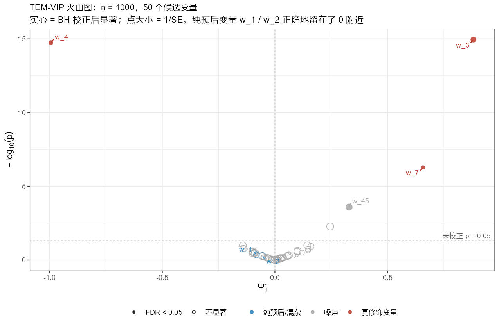
w_1 / w_2 虽然既是混杂又是强预后变量，却正确地留在了 0 附近—— 这正是 TEM-VIP 与”看 \(Y\) 的变量重要性”的根本区别。 但注意 w_45 这个纯噪声变量也过了 BH 0.05： \(n = 1000\)、50 个检验下，FDR 0.05 里出现 1 个假阳性完全正常， 不要把”FDR 显著”读成”确认”。
排序条形图：把”该往下查哪几个”讲清楚
火山图适合放论文，条形图适合放工作汇报——它直接回答”接下来查哪几个”。 把 BH 的实际临界点画出来，比只画 0.05 更有信息：
tb20 <- head(tb[order(p_value)], 20)[, modifier := factor(modifier, levels = rev(modifier))]
thr <- max(tb[p_value_fdr < 0.05, p_value]) # BH 在本次调用内的实际临界 p
ggplot(tb20, aes(x = -log10(p_value), y = modifier)) +
geom_col(width = .7, fill = "grey70") +
geom_vline(xintercept = -log10(0.05), linetype = "22", colour = "grey40") +
geom_vline(xintercept = -log10(thr), colour = "#C0392B", linewidth = .45) +
labs(x = expression(-log[10](p)), y = NULL) +
theme_bw(base_size = 11)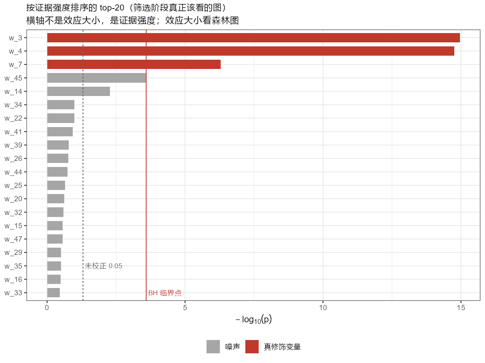
p_value_fdr 在做的事。 横轴是证据强度不是效应大小；效应大小要回到森林图看。
自己画：三类诊断对照图
这一组不是为了展示结果，而是为了在出结果之前发现自己配错了。 每一张都对应第 7 页清单里的一条。
交叉拟合开没开
第 3 页那条硬规则的可视化版本。 把三种配置的估计与区间画在一起，再标上真值：
grab <- function(f, tag) as.data.table(f$temvip_inference_tbl)[
, .(modifier = as.character(modifier), estimate, se, ci_lower, ci_upper, cfg = tag)]
L <- Lrnr_ranger$new()
set.seed(2); f1 <- unihtee(dt, cn, cn, "a", "y", outcome_type = "continuous", effect = "absolute")
set.seed(2); f2 <- unihtee(dt, cn, cn, "a", "y", outcome_type = "continuous", effect = "absolute",
cond_outcome_estimator = L, prop_score_estimator = L)
set.seed(2); f3 <- unihtee(dt, cn, cn, "a", "y", outcome_type = "continuous", effect = "absolute",
cond_outcome_estimator = L, prop_score_estimator = L, cross_fit = TRUE)
cmp <- rbindlist(list(grab(f1, "① 默认 glm / 不交叉拟合"),
grab(f2, "② ranger / 不交叉拟合"),
grab(f3, "③ ranger / 交叉拟合")))[modifier %in% c("w_3","w_4","w_8","w_5")]
ggplot(cmp, aes(x = estimate, y = modifier, colour = cfg)) +
geom_vline(xintercept = 0, linetype = "22", colour = "grey75") +
geom_errorbar(aes(xmin = ci_lower, xmax = ci_upper), width = .22,
position = position_dodge(width = .65), linewidth = .6) +
geom_point(size = 2.2, position = position_dodge(width = .65)) +
theme_bw(base_size = 11) + theme(legend.position = "bottom")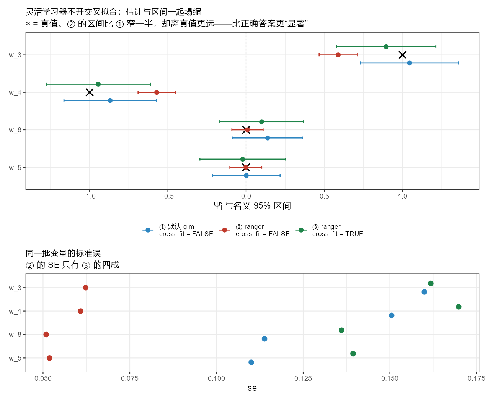
cross_fit“最快的方法。
换一把效应尺度，名次变了多少
effect = "absolute" 与 "relative" 是两个不同的参数，不是同一个量的两种表达。 用名次连线图（bump chart）看它们是否给出一致的结论：
r <- rbindlist(lapply(c("absolute", "relative"), function(e) {
f <- unihtee(dtb, cn, cn, "a", "y", outcome_type = "binary", effect = e)
t <- as.data.table(f$temvip_inference_tbl)[, .(modifier = as.character(modifier), p_value)]
t[, `:=`(rank = rank(p_value), scale = e)]
}))
ggplot(r, aes(x = scale, y = rank, group = modifier)) +
geom_line(linewidth = .8, alpha = .85) + geom_point(size = 2.6) +
scale_y_reverse(breaks = 1:10) +
labs(x = NULL, y = "名次（1 = p 值最小）") + theme_bw(base_size = 11)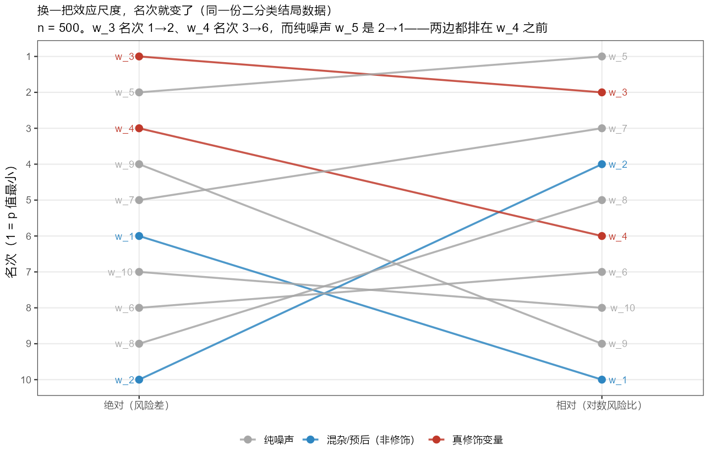
w_3 名次 1→2、w_4 名次 3→6， 而纯噪声 w_5 是 2→1，两把尺子都把它排在 w_4 之前。 混杂兼预后变量 w_1 / w_2 在两边都在中下游，说明参数定义确实在起作用。 这张图的用法是：先画，再决定写哪一把尺度进方法学； 两边结论打架时不要事后挑一个好看的报。
协变量标准化前后的 SE
第 4 页那个向量回收 bug 的可视化。 生存结局和任何非默认学习器都会触发它，画一次就知道自己有没有中招：
se <- merge(ts[, .(modifier, se_std = se)], tr[, .(modifier, se_raw = se)], by = "modifier")
se[, vj := sapply(modifier, function(m) var(ds[[m]]))] # 原始尺度的方差
sl <- melt(se[order(vj)], id.vars = c("modifier", "vj"),
measure.vars = c("se_raw", "se_std"),
variable.name = "scale", value.name = "se")
ggplot(sl, aes(x = se, y = factor(modifier, levels = se[order(vj), modifier]), colour = scale)) +
geom_line(aes(group = modifier), colour = "grey75", linewidth = .6) +
geom_point(size = 2.8) +
scale_x_log10() +
labs(x = "报告的 se（对数刻度）", y = NULL, colour = NULL) +
theme_bw(base_size = 11) + theme(legend.position = "bottom")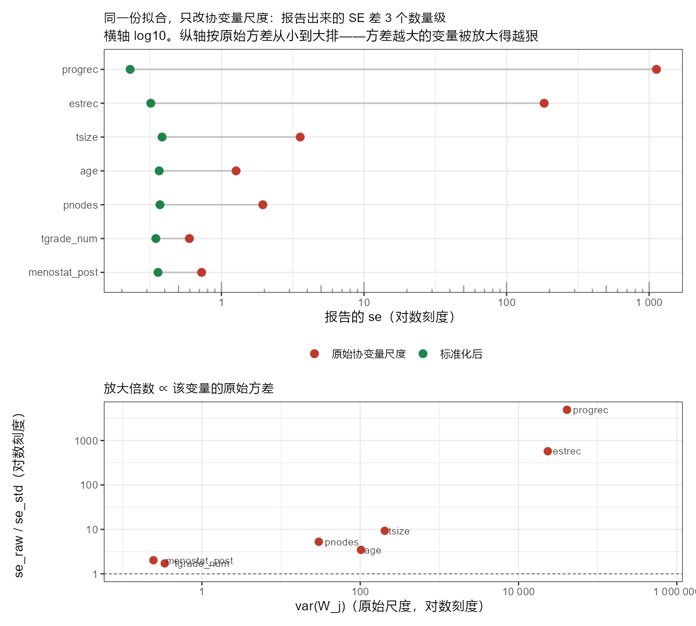
glmnet 内部本来就标准化， 所以两边的 ace_estimate 逐位相同，只有报告的 SE 变了）。 上：progrec 的 SE 从 0.229 变成 1125，跨了将近四个数量级。 下：放大倍数与该变量的原始方差成正比—— 这正是”按行回收”应该有的指纹，而不是量纲效应 （真的量纲效应会让 SE 和估计同比缩放，\(z\) 不变；这里 \(z\) 从 \(-7.7\times10^{-7}\) 变成 \(-0.647\)）。 纵轴按原始方差排序，可以看到一条清晰的斜坡。
判断规则很简单：把所有 modifiers 的 var() 打出来，跨度超过一个数量级就先 scale()。
生存结局的图
plot.unihtee() 对生存结局照常可用——fit$data 里存的是原始宽表， 纵轴的”条件平均因果效应”在这里读作”截至 \(t\) 的 RMST 差”。 但更常用的还是森林图：
ts <- as.data.table(f_s$temvip_inference_tbl)[, modifier := as.character(modifier)]
ts[, modifier := factor(modifier, levels = ts[order(estimate), modifier])]
ggplot(ts, aes(x = estimate, y = modifier)) +
geom_vline(xintercept = 0, linetype = "22", colour = "grey40") +
geom_errorbar(aes(xmin = ci_lower, xmax = ci_upper), width = .2,
colour = "grey45", linewidth = .6) +
geom_point(size = 2.4, colour = "#2E86C1") +
geom_text(aes(x = ci_upper, label = sprintf(" p=%.2f", p_value)),
hjust = 0, size = 3, colour = "grey30") +
scale_x_continuous(expand = expansion(mult = c(.06, .3))) +
labs(x = "Ψ̂ⱼ（每个标准差对应的 RMST 差改变量）", y = NULL) +
theme_bw(base_size = 11)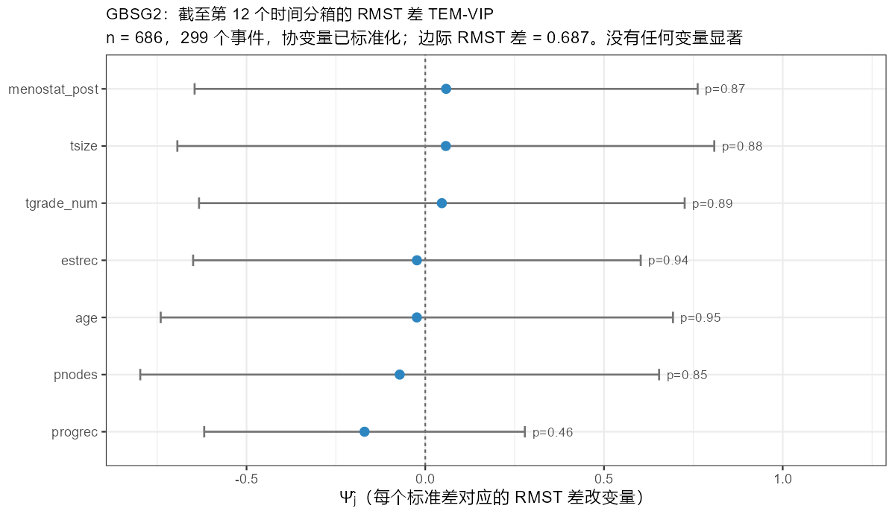
time_cutoff = 12、Lrnr_glmnet、协变量已标准化。 七个变量的区间全部跨 0，最小的 p 是 progrec 的 0.46。 横轴单位是”每个标准差”——因为做了标准化，解释时要乘回 sd(progrec) 才是原始单位。 这张图的价值恰恰在于它是阴性的：它把”没有发现”画得和”有发现”一样清楚， 而只报一张按 p 排序的表很容易被读成”progrec 最重要”。
一张图该配哪种场景
| 想回答的问题 | 用哪张图 | 本页位置 |
|---|---|---|
| 某个特定变量的效应怎么随它变化 | 内置 plot.unihtee() |
图 221.1、图 221.2 |
| 前几名变量里哪些真的在动 | 内置图批量 + 统一纵轴 | 图 221.3 |
| 我会不会漏了一个非线性修饰变量 | AIPW 伪结局散点 + loess | 图 221.4 |
| 效应有多大、精度如何（变量 ≤ 20） | 森林图 | 图 221.5 |
| 几十个变量的整体格局 | 火山图 | 图 221.6 |
| 接下来该往下查哪几个 | 排序条形图 + BH 临界线 | 图 221.7 |
我该不该开 cross_fit |
三配置估计/区间对照 | 图 221.8 |
| 两把效应尺度结论一致吗 | 名次连线图 | 图 221.9 |
| 我的 SE 可不可信 | 标准化前后 SE 对照（对数轴） | 图 221.10 |
| 生存结局的结果怎么呈现 | 森林图（注意单位是”每个标准差”） | 图 221.11 |
导出与在 Quarto 里使用
# 本页全部图形的输出方式：ragg 保证中文不掉字，白底在深浅主题下都可读
ggsave("temvip-forest.png", p, width = 8, height = 5, dpi = 150,
device = ragg::agg_png, bg = "white")在 Quarto 里插入并交叉引用：
{#fig-my-forest}
正文里用 [@fig-my-forest] 引用。所有图形在 Windows R 4.4.3、unihtee 0.0.3、sl3 1.4.5、ggplot2 4.0.2 下生成， 随机过程均已固定种子（README 数据 set.seed(510)； \(p = 50\) 的筛选场景 set.seed(77)；U 形演示 set.seed(2026)； ranger 对照 set.seed(2)；GBSG2 set.seed(99)）。 glmnet / ranger 带交叉验证随机性，换种子结果会小幅变动， 但本页讨论的方向性结论（内置图是直线、U 形漏报、 不交叉拟合 SE 塌缩、未标准化 SE 爆炸）与种子无关。
接下来
第 7 页：全部失效路径汇总与可照抄的工作流。